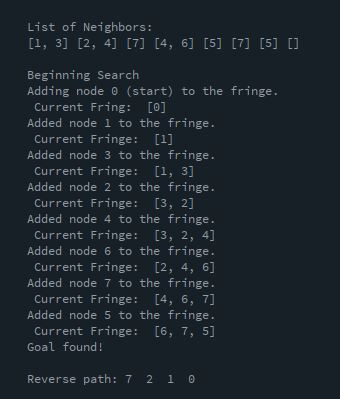
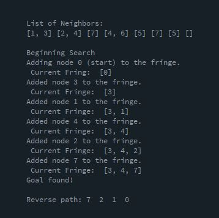

John Cullom - cullo006@umn.edu
No extra credit involved in MouseFollow
No extra credit involved in Particle System
No extra credit involved in TTForces
The purpose of the visited and parent lists are to check against cycles as well as keep track what path the search is on. Keeping this path allows the program to print out the solution path when it reaches the solution node.
After converting the graph to the new one, the graph is no longer a tree because certain nodes have more than one parent node. This could potentially lead to cycles and infinite loops. However, the new graph is searchable with BFS and DFS.
BFS gets the optimal path answer but takes more steps than DFS. There is no cycle in the graph which allows it to still find the optimal path.
DFS gets the optimal path answer in less steps than BFS. There is no cycle in the graph which allows DFS to find any answer at all. If there was a cycle, it would not be able to find a solution path.
No extra credit involved in BFS and DFS
No extra credit involved in PRM